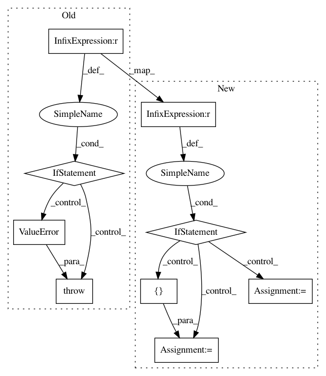

95fa4bf5ee21049985047abf1f3fc4d9fc34e12b,entity2rec/surprise_recommender.py,,,#,98
Before Change
elif rec == "SVD":
algorithm = SVD()
elif rec == "NMF":
algorithm = NMF()
else:
raise ValueError("Choose between ItemKNN, SVD or NMF")
itemrec = SurpriseRecommender(algorithm, args.dataset, args.train)
// initialize evaluator
After Change
algorithm = [SVD()]
name = ["SVD"]
elif rec == "NMF":
algorithm = [NMF()]
name = ["NMF"]
else:
algorithm = [KNNBaseline(sim_options=sim_options), SVD(), NMF()]
name = ["ItemKNN", "SVD", "NMF"]
// initialize evaluator
if args.dataset == "LastFM":
In pattern: SUPERPATTERN
Frequency: 3
Non-data size: 9
Instances
Project Name: D2KLab/entity2rec
Commit Name: 95fa4bf5ee21049985047abf1f3fc4d9fc34e12b
Time: 2018-06-15
Author: enricopalumbo0@gmail.com
File Name: entity2rec/surprise_recommender.py
Class Name:
Method Name:
Project Name: sentinel-hub/eo-learn
Commit Name: 412dd41ebd8f3573ba5762a13f5e80d8244a1d89
Time: 2019-12-24
Author: jovan.visnjic@sinergise.com
File Name: core/eolearn/core/eodata.py
Class Name: EOPatch
Method Name: save_aws_new
Project Name: ntucllab/libact
Commit Name: e81142f0869321cd8792e13bfc4f6fb85d9f1efc
Time: 2015-12-22
Author: yangarbiter@gmail.com
File Name: libact/query_strategies/uncertainty_sampling.py
Class Name: UncertaintySampling
Method Name: make_query